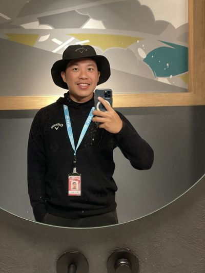

關於教練
Brian 教練
短桿王切桿系統創辦人——用18年球齡與10年教練生涯，打造一套真正能執行的短桿系統。

短桿王創辦人
從破百邊緣，
走到 30+ 冠軍推手
接觸高爾夫即將邁入第 18 年。10 年職業選手、近 10 年教練生涯，這輩子，從沒想過要跟高爾夫分開。
但一開始，我也是那個打不好的人。
初學時，在破百邊緣來來回回掙扎了將近 3 年。換了一位又一位教練、翻遍高爾夫雜誌、花了爸媽大量金錢，每次比賽結束後，我常常站在球場的淋浴間裡，邊沖澡邊哭。不是不努力，是找不到方向——沒有人告訴我，問題出在哪裡，更沒有人給我一套真正能執行的系統。
那段最灰暗的日子，反而成了我最重要的資產。它讓我真正理解：打不好，從來不是態度問題，而是從來沒有人幫你把正確的事情說清楚。
2016 年，我毅然決然飛到澳洲進修一整年，開拓了對高爾夫技術的全新視野。回到台灣後，幸運地遇上了影響我最深的人生導師。或許是我鍥而不捨的熱情打動了他，他決定親手栽培我，成為一名真正頂尖的短桿教練。
開車回家的路上，我放聲大哭。不是因為難過，而是因為我知道——那一天，是我整個生涯的轉捩點。
從那天起，我開始用所有時間鑽研短桿技術，不斷進修、不斷累積實戰經驗，帶著一位又一位學員去驗證這套系統。皇天不負苦心人，成果開始一次次說話：青少年冠軍、職業賽雙料冠軍、打破台灣十年無人考取日巡的紀錄⋯⋯每一個成績，都是對這套系統最真實的證明。
「師者，傳道授業解惑也」
我相信，沒有教不會的學生，只有還沒找到對的方法的教練。成為師者，必須放下自傲、精益求精、實事求是。我的課從不超過 3 個重點，見到學生的第一個小時，前 20 分鐘就要把核心問題解決。你能聽懂、能執行、能在球場上用出來，那才叫真正的教學。
我沒有國家級教練證，也沒有一堆看不懂的證照，但我有的，是學員的結果與我自己的經歷。
學員成就
指導學員累計
奪冠 30+ 場 🏆
- 陳宣佾 — 2023仰德公開賽 職業、業餘雙料冠軍 🏆
- 余松柏 — 打破台灣10年紀錄，考取JGTO日本男子職業巡迴賽資格 🏆
- 余松柏 — 台灣唯一日巡選手，Brian 隨隊出征（2024）
- 蔡凱任 — 脫離短桿低潮，2025年奪下2冠 🏆
- 蔡凱任 — 2026佳運職業公開賽冠軍 🏆
- 詹佳翰 — 建立切桿系統，考取中國職業巡迴賽資格（2026）🏆
- 協助美巡、亞巡、日巡、台巡、中巡各大台灣職業選手（2026）